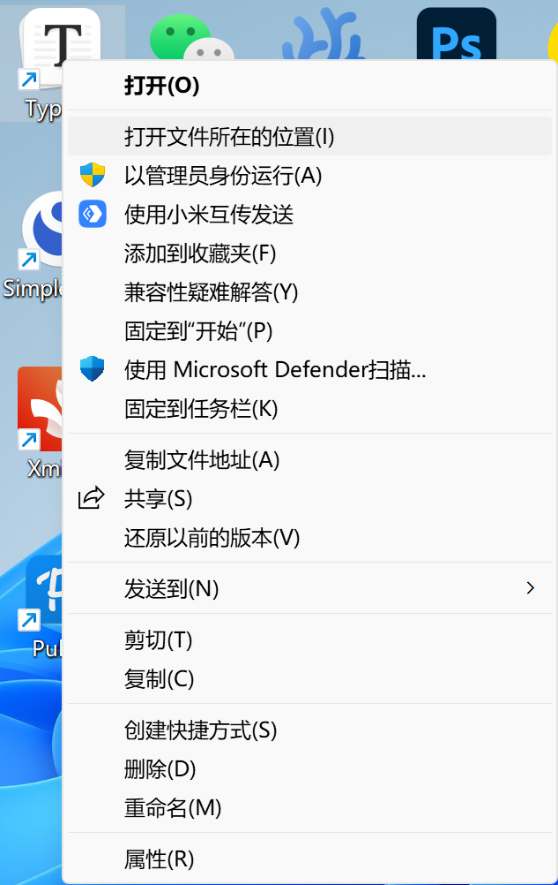
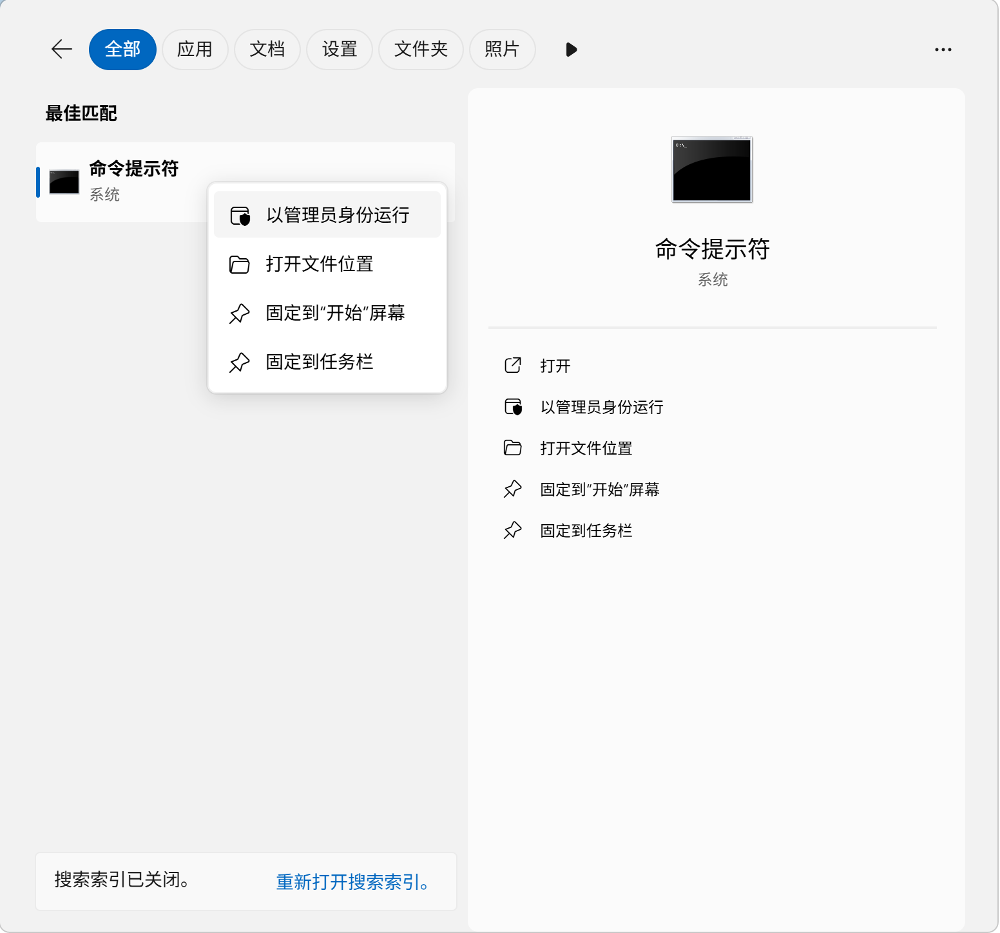

Typora 激活方法

此方法仅适用与1.9.5版本的Windows设备激活
文件获取
- 下载Typora1.9.5之前任意版本，我使用的是1.8.10，这个是32位版本（我使用的软件可以右键复制链接至空白页面粘贴下载）
- 下载里面的两个exe保留（密码：godk）
安装方式
- 双击打开下载的安装包，跟着步骤无脑下一步直到出现激活界面
- 右键打开文件所在位置：
 - 将两个程序复制进目录里面
Win+S输入cmd，右键使用管理员身份打开： - 输入
cd C:\Program Files\Typora - 输入
node_inject.exe，出现done之后输入license-gen.exe得到激活码 - 将激活码填入，邮箱随意
- 如果出现弹窗提示要使用国内服务器点击确认即可。
注：如果使用精简版系统，出现dll缺失问题使用他人激活版本下载安装即可